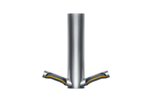
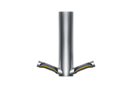
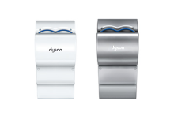
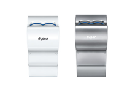

Самые быстрые сушилки для гигиенического высушивания рук с фильтром HEPA
Потоки воздуха со скоростью 690 км/ч буквально «срезают» воду с рук и высушивают их быстро и гигиенично всего за 12 секунд.2

Экономит ваши деньги
Готовые эксплуатационные расходы до 97% ниже, чем при использовании бумажных полотенец, и до 75% ниже, чем при использовании других сушилок для рук.3

Экономит пространство туалетной комнаты
Благодаря инновационной задней панели сушилка для рук Dyson Airblade V проста в установке и обслуживании. За счет узкой компактной конструкции она выступает от стены всего на 10 см, занимая мало места в туалетной комнате.
Меньше очередей в туалетной комнате
Сушкилка для рук Dyson Airblade V полностью высушивает руки за 12 секунд.2 Поэтому люди быстрее покидают туалетную комнату, что позволяет избежать очередей.


 



 
